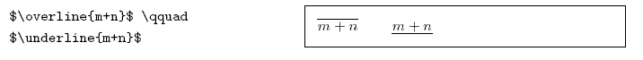
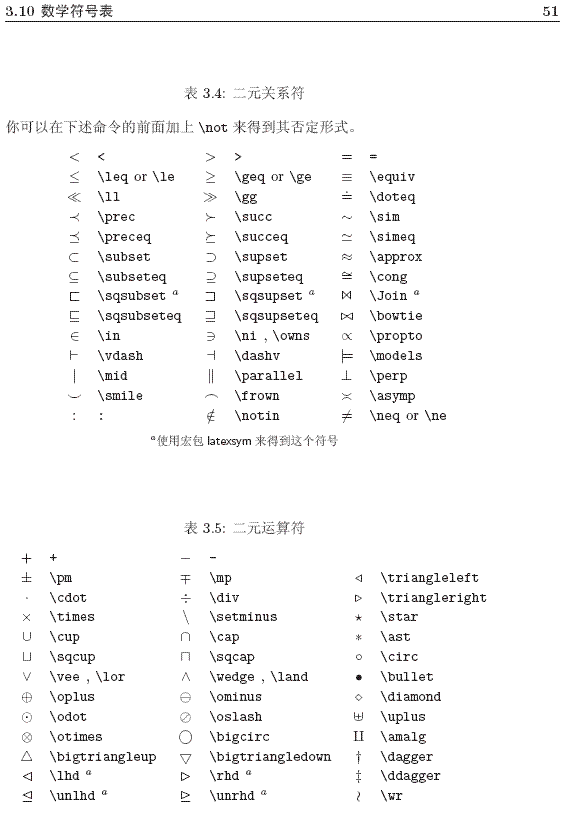

Liren Liu's Notebook
1.0
Pai Li (李湃)
Vasp
Scripts for job management system on super-computer
kMC simulation
Machine Learning tools
Python Scripts
Math notation in Latex
Vim skills
A ReStructuredText Primer
Liren Liu's Notebook
Docs
»
Math notation in Latex
View page source
Math notation in Latex
¶

